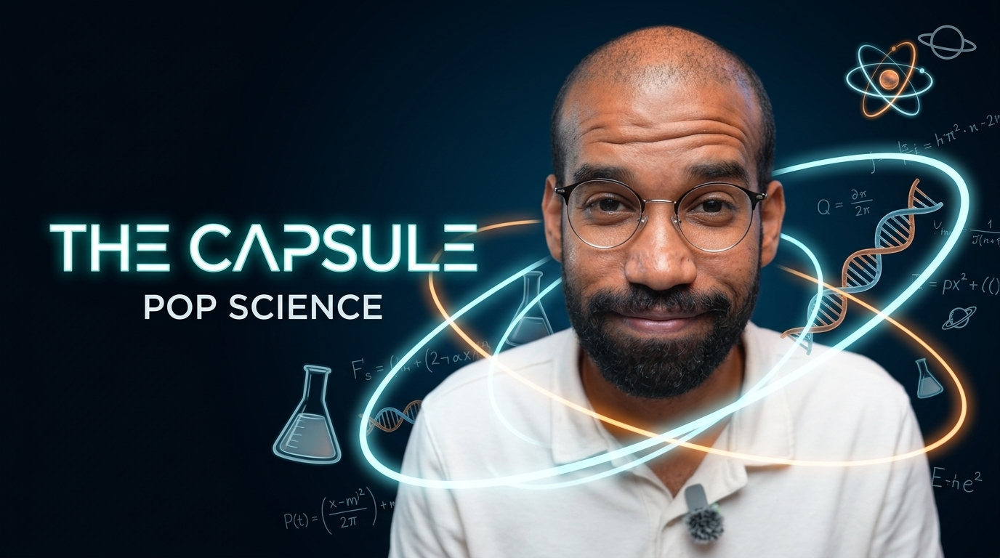

A simple and accessible presentation of scientific content through clean editing, motion graphics, and engaging sound design.
Project Goal
The goal was to present scientific content in a simple and accessible way while keeping the edit clean, light, and engaging. The motion graphics were designed to explain and support what was being said without distracting from the information itself.
الهدف كان تقديم محتوى علمي بطريقة بسيطة وسهلة، مع مونتاج Clean وخفيف يشد الانتباه من غير ما يشتت عن المعلومة. واستخدمت الـ Motion Graphics عشان تشرح وتدعم الكلام اللي بيتقال، مش مجرد شكل وخلاص.
Strategy
I handled the edit from start to finish, beginning with the first cut and hook, then building the subtitles, motion graphics, and sound design around the spoken content. Every editing choice was made to keep the reel engaging while keeping the information at the center.
منتجت الفيديو بالكامل من أول الـ First Cut والـ Hook، لحد الـ Subtitles والـ Motion Graphics والـ Sound Design. بنيت المونتاج كله حوالين الكلام والمعلومة، بحيث الفيديو يفضل جذاب من غير ما الـ Edit نفسه ياخد التركيز من المحتوى.
Problem Solving
This was my first project working with Pop Science content, so the main challenge was finding the balance between engaging editing and simplicity. The edit had to be interesting enough to hold attention without becoming too heavy or covering up the information the video was built around.
ده كان أول فيديو أشتغل عليه كـ Pop Science، وأكبر تحدي كان إني أوصل للـ Balance بين مونتاج يشد وبين إنه يفضل بسيط. كان لازم الفيديو يكون ممتع ومليان حياة، بس من غير ما الـ Edit يبقى Over أو يغطي على المعلومة اللي الفيديو معمول عشانها.
Workflow
Conceptualize scientific facts into digestible narrative beats.
Assemble raw footage and trim pacing for clear delivery.
Craft an attention-grabbing opening sequence.
Design clean and readable subtitle overlays.
Add visual elements to explain and support complex concepts.
Layer background music and audio effects to enhance rhythm.
Deliver polished vertical reels optimized for social media.
Tools
Final Result